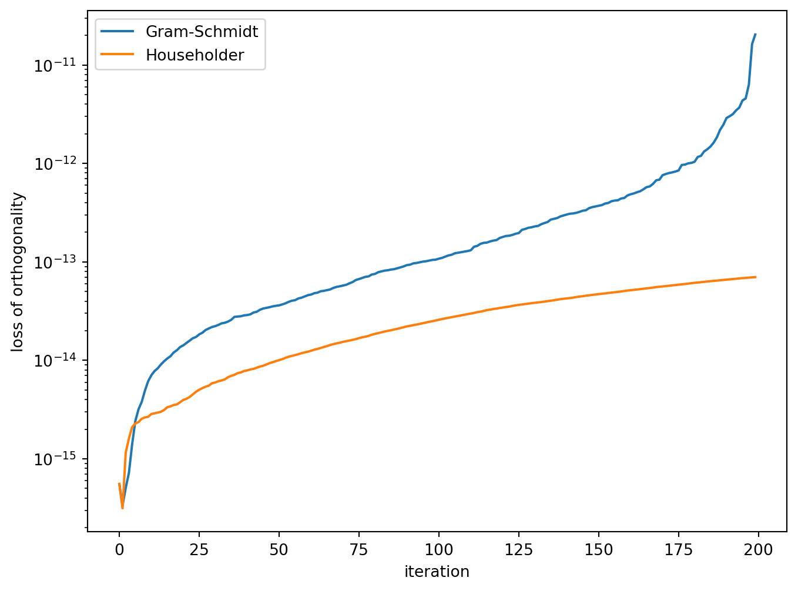
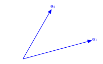
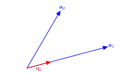
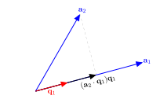
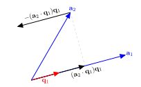
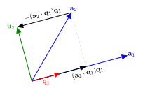
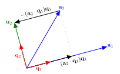
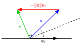
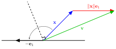

6G6Z3017 Computational Methods in ODEs
QR decomposition is another decomposition method that factorises a matrix in the product of two matrices \(Q\) and \(R\) such that
\[ \begin{align*} A = QR, \end{align*} \]
where \(Q\) is an orthogonal matrix and \(R\) is an upper triangular matrix.
Note
A set of vectors \(\lbrace \mathbf{v}_1 ,\mathbf{v}_2 ,\mathbf{v}_3 ,\dots \rbrace\) is said to be orthogonal if \(\mathbf{v}_i \cdot \mathbf{v}_j =0\) for \(i\not= j\). Furthermore the set is said to be orthonormal if \(\mathbf{v}_i\) are all unit vectors.
Note
An orthogonal matrix is a matrix where the columns are a set of orthonormal vectors. If \(A\) is an orthogonal matrix if
\[ \begin{align*} A^\mathsf{T} A=I. \end{align*} \]
Consider the matrix
\[ \begin{align*} A= \begin{pmatrix} 0.8 & -0.6\\ 0.6 & 0.8 \end{pmatrix}. \end{align*} \]
This is an orthogonal matrix since
\[ \begin{align*} A^\mathsf{T} A=\begin{pmatrix} 0.8 & 0.6\\ -0.6 & 0.8 \end{pmatrix} \begin{pmatrix} 0.8 & -0.6\\ 0.6 & 0.8 \end{pmatrix} = \begin{pmatrix} 1 & 0\\ 0 & 1 \end{pmatrix}=I. \end{align*} \]
Furthermore it is an orthonormal matrix since the magnitude of the columns for \(A\) are both 1.
Consider the \(3 \times 3\) matrix \(A\) represented as the concatenation of the column vectors \(\mathbf{a}_1, \mathbf{a}_2, \mathbf{a}_3\)
\[ \begin{pmatrix} a_{11} & a_{12} & a_{13} \\ a_{21} & a_{22} & a_{23} \\ a_{31} & a_{32} & a_{33} \end{pmatrix} = \begin{pmatrix} \uparrow & \uparrow & \uparrow \\ \mathbf{a}_1 & \mathbf{a}_2 & \mathbf{a}_3 \\ \downarrow & \downarrow & \downarrow \end{pmatrix} \]
To calculate the orthogonal \(Q\) matrix we need a set of vectors \(\{\mathbf{q}_1, \mathbf{q}_2, \mathbf{q}_3\}\) that span the same space as \(\{\mathbf{a}_1, \mathbf{a}_2, \mathbf{a}_3\}\) but are orthogonal to each other. One way to do this is using the Gram-Schmidt process.

Consider this diagram that shows the first two non-orthogonal vectors \(\mathbf{a}_1\) and \(\mathbf{a}_2\).

\(\mathbf{q}_1\) is the unit vector that is parallel to \(\mathbf{a}_1\)

\((\mathbf{a}_2 \cdot \mathbf{q}_1) \mathbf{q}_1\) is the vector projection of \(\mathbf{a}_2\) onto \(\mathbf{a}_1\).

Subracting this projection from \(\mathbf{a}_2\) gives the orthogonal vector \(\mathbf{u}_2\).

Subracting this projection from \(\mathbf{a}_2\) gives the orthogonal vector \(\mathbf{u}_2\).

Normalising \(\mathbf{u}_2\) gives the unit orthogonal vector \(\mathbf{q}_2\).
Subtract the vector projection of \(\mathbf{a}_2\) onto \(\mathbf{u}_1\)
\[ \mathbf{u}_2 = \mathbf{a}_2 - \left( \frac{\mathbf{q}_1 \cdot \mathbf{a}_1}{\mathbf{q}_1 \cdot \mathbf{u}_1} \right) \mathbf{u}_1.\]
Normalise \(\mathbf{u}_1\) such that \(\mathbf{q}_1 = \dfrac{\mathbf{u}_1}{\|\mathbf{u}_1\|}\) so we have
\[ \mathbf{u}_2 = \mathbf{a}_2 - (\mathbf{q}_1 \cdot \mathbf{a}_2) \mathbf{q}_1. \]
Normalise \(\mathbf{u}_2\) to give \(\mathbf{q}_2 = \dfrac{\mathbf{u}_2}{\|\mathbf{u}_2\|}\).
Subtract the vector projections of \(\mathbf{a}_3\) onto \(\mathbf{q}_1\) and \(\mathbf{q}_2\) from \(\mathbf{a}_3\)
\[ \mathbf{u}_3 = \mathbf{a}_3 - (\mathbf{q}_1 \cdot \mathbf{a}_3) \mathbf{q}_1 - (\mathbf{q}_2 \cdot \mathbf{a}_3) \mathbf{q}_2. \]
Normalise \(\mathbf{u}_3\) to give \(\mathbf{q}_3 = \dfrac{\mathbf{u}_3}{\|\mathbf{u}_3\|}\).
Since \(\mathbf{u}_i = (\mathbf{q}_i \cdot \mathbf{a}_i) \mathbf{q}_i\) and rearranging the equations for \(\mathbf{u}_i\) to make \(\mathbf{a}_i\) the subject gives
\[ \begin{align*} \mathbf{a}_1 &= (\mathbf{q}_1 \cdot \mathbf{a}_1), \\ \mathbf{a}_2 &= (\mathbf{q}_1 \cdot \mathbf{a}_2) \mathbf{q}_1 + (\mathbf{q}_2 \cdot \mathbf{a}_2) \mathbf{q}_2, \\ \mathbf{a}_3 &= (\mathbf{q}_1 \cdot \mathbf{a}_3) \mathbf{q}_1 + (\mathbf{q}_2 \cdot \mathbf{a}_3) \mathbf{q}_2 + (\mathbf{q}_3 \cdot \mathbf{a}_3) \mathbf{q}_3, \\ & \vdots \end{align*} \]
The columns of the \(Q\) matrix are formed using the vectors \(\mathbf{q}_i\)
\[ Q = \begin{pmatrix} \uparrow & \uparrow & & \uparrow \\ \mathbf{q}_1 & \mathbf{q}_2 & \cdots & \mathbf{q}_n \\ \downarrow & \downarrow & & \downarrow \end{pmatrix}, \]
and the elements of the \(R\) matrix are formed from the dot products of the \(\mathbf{q}_i\) and \(\mathbf{a}_j\) vectors such that
\[ R = \begin{pmatrix} (\mathbf{q}_1 \cdot \mathbf{a}_1) & (\mathbf{q}_1 \cdot \mathbf{a}_2) & \cdots & (\mathbf{q}_1 \cdot \mathbf{a}_n) \\ 0 & (\mathbf{q}_2 \cdot \mathbf{a}_2) & \cdots & (\mathbf{q}_1 \cdot \mathbf{a}_n) \\ \vdots & \ddots & \ddots & \vdots \\ 0 & \cdots & 0 & (\mathbf{q}_n \cdot \mathbf{a}_n) \end{pmatrix}. \]
Note
For \(j = 1, \ldots, n\) do
\(Q \gets (\mathbf{q}_1, \mathbf{q}_2, \ldots, \mathbf{q}_2)\)
For \(i = 1, \ldots, n\) do
Calculate the QR decomposition of the following matrix using the Gram-Schmidt process
\[ \begin{align*} A = \begin{pmatrix} -1 & -1 & 1 \\ 1 & 3 & 3 \\ -1 & -1 & 5 \\ 1 & 3 & 7 \end{pmatrix}. \end{align*} \]
Solution:
\[ \begin{align*} j &= 1: & \mathbf{u}_1 &= \mathbf{a}_1 = \begin{pmatrix} -1 \\ 1 \\ -1 \\ 1 \end{pmatrix}, \\ && r_{11} &= \| \mathbf{u}_1 \| = 2, \\ && \mathbf{q}_1 &= \frac{\mathbf{u}_1}{r_{11}} = \frac{1}{2} \begin{pmatrix} -1 \\ 1 \\ 1 \\ 1 \end{pmatrix} = \begin{pmatrix} -\frac{1}{2} \\ \frac{1}{2} \\ -\frac{1}{2} \\ \frac{1}{2} \end{pmatrix}, \\ \end{align*} \]
\[ \begin{align*} j &= 2: & r_{12} &= \mathbf{q}_1 \cdot \mathbf{a}_2 = \begin{pmatrix} -\frac{1}{2} \\ \frac{1}{2} \\ -\frac{1}{2} \\ \frac{1}{2} \end{pmatrix} \cdot \begin{pmatrix} -1 \\ 3 \\ -1 \\ 3 \end{pmatrix} = 4, \\ && \mathbf{u}_2 &= \mathbf{a}_2 - r_{12} \mathbf{q}_1 = \begin{pmatrix} -1 \\ 3 \\ -1 \\ 3 \end{pmatrix} - 4 \begin{pmatrix} -\frac{1}{2} \\ \frac{1}{2} \\ -\frac{1}{2} \\ \frac{1}{2} \end{pmatrix} = \begin{pmatrix} 1 \\ 1 \\ 1 \\ 1 \end{pmatrix}, \\ && r_{22} &= \| \mathbf{u}_2 \| = 2, \\ && \mathbf{q}_2 &= \frac{\mathbf{u}_2}{r_{22}} = \frac{1}{2} \begin{pmatrix} 1 \\ 1 \\ 1 \\ 1 \end{pmatrix} = \begin{pmatrix} \frac{1}{2} \\ \frac{1}{2} \\ \frac{1}{2} \\ \frac{1}{2} \end{pmatrix}. \end{align*} \]
\[ \begin{align*} j &= 2: & r_{12} &= \mathbf{q}_1 \cdot \mathbf{a}_2 = \begin{pmatrix} -\frac{1}{2} \\ \frac{1}{2} \\ -\frac{1}{2} \\ \frac{1}{2} \end{pmatrix} \cdot \begin{pmatrix} -1 \\ 3 \\ -1 \\ 3 \end{pmatrix} = 4, \\ && \mathbf{u}_2 &= \mathbf{a}_2 - r_{12} \mathbf{q}_1 = \begin{pmatrix} -1 \\ 3 \\ -1 \\ 3 \end{pmatrix} - 4 \begin{pmatrix} -\frac{1}{2} \\ \frac{1}{2} \\ -\frac{1}{2} \\ \frac{1}{2} \end{pmatrix} = \begin{pmatrix} 1 \\ 1 \\ 1 \\ 1 \end{pmatrix}, \\ && r_{22} &= \| \mathbf{u}_2 \| = 2, \\ && \mathbf{q}_2 &= \frac{\mathbf{u}_2}{r_{22}} = \frac{1}{2} \begin{pmatrix} 1 \\ 1 \\ 1 \\ 1 \end{pmatrix} = \begin{pmatrix} \frac{1}{2} \\ \frac{1}{2} \\ \frac{1}{2} \\ \frac{1}{2} \end{pmatrix}. \end{align*} \]
The diagonal elements of \(R\) are all positive so we don’t need to make any adjustments. Thus the \(Q\) and \(R\) matrices are given by
\[ \begin{align*} Q &= \begin{pmatrix} -\frac{1}{2} & \frac{1}{2} & -\frac{1}{2} \\ \frac{1}{2} & \frac{1}{2} & -\frac{1}{2} \\ -\frac{1}{2} & \frac{1}{2} & \frac{1}{2} \\ \frac{1}{2} & \frac{1}{2} & \frac{1}{2} \end{pmatrix}, & R &= \begin{pmatrix} 2 & 4 & 2 \\ 0 & 2 & 8 \\ 0 & 0 & 4 \end{pmatrix}. \end{align*} \]
We can check that this is correct by verifying that \(A = QR\) and that \(Q^\mathsf{T}Q = I\).
\[ \begin{align*} \begin{pmatrix} -\frac{1}{2} & \frac{1}{2} & -\frac{1}{2} \\ \frac{1}{2} & \frac{1}{2} & -\frac{1}{2} \\ -\frac{1}{2} & \frac{1}{2} & \frac{1}{2} \\ \frac{1}{2} & \frac{1}{2} & \frac{1}{2} \end{pmatrix} \begin{pmatrix} 2 & 4 & 2 \\ 0 & 2 & 8 \\ 0 & 0 & 4 \end{pmatrix} &= \begin{pmatrix} -1 & -1 & 1 \\ 1 & 3 & 3 \\ -1 & -1 & 5 \\ 1 & 3 & 7 \end{pmatrix} = A, \\ \begin{pmatrix} -\frac{1}{2} & \frac{1}{2} & -\frac{1}{2} & \frac{1}{2} \\ \frac{1}{2} & \frac{1}{2} & \frac{1}{2} & \frac{1}{2} \\ -\frac{1}{2} & -\frac{1}{2} & \frac{1}{2} & \frac{1}{2} \end{pmatrix} \begin{pmatrix} -\frac{1}{2} & \frac{1}{2} & -\frac{1}{2} \\ \frac{1}{2} & \frac{1}{2} & -\frac{1}{2} \\ -\frac{1}{2} & \frac{1}{2} & \frac{1}{2} \\ \frac{1}{2} & \frac{1}{2} & \frac{1}{2} \end{pmatrix} &= \begin{pmatrix} 1 & 0 & 0 \\ 0 & 1 & 0 \\ 0 & 0 & 1 \end{pmatrix} = I. \end{align*} \]
A Householder reflection reflects a vector \(\mathbf{x}\) about a hyperplane that is orthogonal to a given vector \(\mathbf{v}\).

The Householder matrix is an orthogonal reflection matrix of the form
\[ H = I - 2 \frac{\mathbf{v} \mathbf{v}^\mathsf{T}}{\mathbf{v}^\mathsf{T} \mathbf{v}}. \]
where \(\mathbf{v} = \mathbf{x} - \| \mathbf{x} \| \mathbf{e}_1\).
The matrix \(H\) is symmetric and orthogonal.
If the magnitude of \(\mathbf{x}\) is close to being parallel to \(\mathbf{e}_1\) then the calculation of \(\mathbf{v}\) will involve the division by a number close to zero.
To overcome this we use a Householder transformation to reflect \(\mathbf{x}\) so that it is parallel to \(-\mathbf{e}_1\) instead of \(+\mathbf{e}_1\).

To do this we calculate \(\mathbf{v}\) by adding \(\| \mathbf{x} \| \mathbf{e}_1\) to \(\mathbf{x}\) when the sign of \(x_1\) is negative, i.e.,
\[ \mathbf{v} = \mathbf{x} - \operatorname{sign}(x_1) \| \mathbf{x} \| \mathbf{e}_1, \]
where \(\operatorname{sign}(x)\) returns \(+1\) if \(x \geq 0\) and \(-1\) if \(x < 0\).
To compute the QR decomposition of a matrix \(A\), we reflect the first column of \(A\), using Householder reflection so that it is parallel to \(\mathbf{e}_1\).
The vector \(\mathbf{v}\) is given by
\[ \mathbf{v} = \mathbf{x} - \operatorname{sign}(x_1) \|\mathbf{x}\| \mathbf{e}_1, \]
where \(\mathbf{x}\) is the first column of \(A\) and \(\mathbf{e}_1 = (1, 0, \ldots, 0)^\mathsf{T}\) is the first basis vector.
The first Householder matrix is then given by
\[ H_1 = I - 2 \frac{\mathbf{v} \mathbf{v}^\mathsf{T}}{\mathbf{v}^\mathsf{T} \mathbf{v}}. \]
Multiplying \(H_1\) by \(A\) reflects the first column of \(A\) such that it is parallel to \(\mathbf{e}_1\).
\[ \begin{align*} R = H_1 A = \begin{pmatrix} r_{11} & r_{12} & r_{13} & \cdots & r_{1n} \\ 0 & b_{22} & b_{23} & \cdots & b_{2n} \\ 0 & b_{32} & b_{33} & \cdots & b_{3n} \\ \vdots & \vdots & \vdots & \ddots & \vdots \\ 0 & b_{m2} & b_{m3} & \cdots & b_{mn} \end{pmatrix} \end{align*} \]
The second Householder reflection is formed by calculating the Householder matrix \(H'\) using the second column of \(R\) starting from the diagonal element, i.e., \(\mathbf{x} = (b_{22}, b_{32}, \ldots, b_{m2})^\mathsf{T}\).
This is used to form the \(m \times m\) Householder matrix \(H_2\) by padding out the first row and column of the identity matrix.
\[ \begin{align*} H_2 = \begin{pmatrix} 1 & \begin{matrix} 0 & \cdots & 0 \end{matrix} \\ \begin{matrix} 0 \\ \vdots \\ 0 \end{matrix} & H' \end{pmatrix} \end{align*} \]
The Householder matrix \(H_2\) is then applied to \(R\) so that the elements of the second column below the diagonal are zeroed out.
\[ \begin{align*} R = H_2 R = \begin{pmatrix} r_{11} & r_{12} & r_{13} & \cdots & r_{1n} \\ 0 & r_{22} & r_{23} & \cdots & r_{2n} \\ 0 & 0 & c_{33} &\cdots & c_{3n} \\ \vdots & \vdots & \vdots & \ddots & \vdots \\ 0 & 0 & c_{n3} & \cdots & c_{nn} \end{pmatrix} \end{align*} \]
We repeat this process until column \(j = m - 1\) when \(R\) will be an upper triangular matrix. If \(A\) has \(n\) columns then
\[R = H_{m-1}\ldots H_2 H_1 A,\]
rearranging gives
\[\begin{align*} H_1^{-1} H_2^{-1} \ldots H_{m-1}^{-1} R = A. \end{align*} \]
The Householder matrices are symmetric and orthogonal so \(H^{-1} = H\) and since we want \(A = QR\) then
\[ \begin{align*} Q = H_1H_2 \ldots H_{m-1}. \end{align*} \]
Note
Calculate the QR decomposition of the following matrix using Householder reflections
\[ \begin{align*} A=\begin{pmatrix} 1 & -4 \\ 2 & 3 \\ 2 & 2 \end{pmatrix}. \end{align*} \]
Solution:
Set \(Q = I\) and \(R = A\). We want to zero out the elements below \(R(1,1)\) so \(\mathbf{x} = (1, 2, 2)^\mathsf{T}\) and \(\|\mathbf{x}\| = 3\).
\[ \begin{align*} j &= 1: & \mathbf{x} &= \begin{pmatrix} 1 \\ 2 \\ 2 \end{pmatrix}, \\ && \mathbf{v} &= \mathbf{x} - \operatorname{sign}(x_1) \|\mathbf{x}\| \mathbf{e}_1 = \begin{pmatrix} 1 \\ 2 \\ 2 \end{pmatrix} - 3 \begin{pmatrix} 1 \\ 0 \\ 0 \end{pmatrix} = \begin{pmatrix} -2 \\ 2 \\ 2 \end{pmatrix}, \\ && H &= I - 2 \frac{\mathbf{v} \mathbf{v}^\mathsf{T}}{\mathbf{v}^\mathsf{T} \mathbf{v}} = \begin{pmatrix} 1 & 0 & 0 \\ 0 & 1 & 0 \\ 0 & 0 & 1 \end{pmatrix} - \frac{2}{12} \begin{pmatrix} 4 & -4 & -4 \\ -4 & 4 & 4 \\ -4 & 4 & 4 \end{pmatrix} = \begin{pmatrix} \frac{1}{3} & \frac{2}{3} & \frac{2}{3} \\ \frac{2}{3} & \frac{1}{3} & -\frac{2}{3} \\ \frac{2}{3} & -\frac{2}{3} & \frac{1}{3} \end{pmatrix}, \end{align*} \]
\[ \begin{align*} && R &= H R = \begin{pmatrix} \frac{1}{3} & \frac{2}{3} & \frac{2}{3} \\ \frac{2}{3} & \frac{1}{3} & -\frac{2}{3} \\ \frac{2}{3} & -\frac{2}{3} & \frac{1}{3} \end{pmatrix} \begin{pmatrix} 1 & -4 \\ 2 & 3 \\ 2 & 2 \end{pmatrix} = \begin{pmatrix} 3 & 2 \\ 0 & -3 \\ 0 & -4 \end{pmatrix}, \\ && Q &= QH = \begin{pmatrix} 1 & 0 & 0 \\ 0 & 1 & 0 \\ 0 & 0 & 1 \end{pmatrix} \begin{pmatrix} \frac{1}{3} & \frac{2}{3} & \frac{2}{3} \\ \frac{2}{3} & \frac{1}{3} & -\frac{2}{3} \\ \frac{2}{3} & -\frac{2}{3} & \frac{1}{3} \end{pmatrix} = \begin{pmatrix} \frac{1}{3} & \frac{2}{3} & \frac{2}{3} \\ \frac{2}{3} & \frac{1}{3} & -\frac{2}{3} \\ \frac{2}{3} & -\frac{2}{3} & \frac{1}{3} \end{pmatrix}. \end{align*} \]
\[ \begin{align*} j &= 2: & \mathbf{x} &= \begin{pmatrix} -3 \\ -4 \end{pmatrix}, \\ && \mathbf{v} &= \mathbf{x} + \|\mathbf{x}\| \mathbf{e}_1 = \begin{pmatrix} -3 \\ -4 \end{pmatrix} + 5 \begin{pmatrix} 1 \\ 0 \end{pmatrix} = \begin{pmatrix} 2 \\ -4 \end{pmatrix}, \\ && H' &= I - 2 \frac{\mathbf{v}\mathbf{v}^\mathsf{T}}{\mathbf{v}^\mathsf{T} \mathbf{v}} = \begin{pmatrix} 1 & 0 \\ 0 & 1 \end{pmatrix} - \frac{2}{20} \begin{pmatrix} 4 & -8 \\ -8 & 16 \end{pmatrix} = \begin{pmatrix} \frac{3}{5} & \frac{4}{5} \\ \frac{4}{5} & -\frac{3}{5} \end{pmatrix}, \\ && H &= \begin{pmatrix} 1 & 0 & 0 \\ 0 & \frac{3}{5} & \frac{4}{5} \\ 0 & \frac{4}{5} & -\frac{3}{5} \end{pmatrix}, \end{align*} \]
\[ \begin{align*} R &= H R = \begin{pmatrix} 1 & 0 & 0 \\ 0 & -\frac{3}{5} & -\frac{4}{5} \\ 0 & -\frac{4}{5} & \frac{3}{5} \end{pmatrix} \begin{pmatrix} 3 & 2 \\ 0 & 3 \\ 0 & -4 \end{pmatrix} = \begin{pmatrix} 3 & 2 \\ 0 & -5 \\ 0 & 0 \end{pmatrix}, \\ Q &= Q H = \begin{pmatrix} \frac{1}{3} & \frac{2}{3} & \frac{2}{3} \\ \frac{2}{3} & \frac{2}{3} & -\frac{1}{3} \\ \frac{2}{3} & -\frac{1}{3} & \frac{2}{3} \end{pmatrix} \begin{pmatrix} 1 & 0 & 0 \\ 0 & \frac{3}{5} & \frac{4}{5} \\ 0 & \frac{4}{5} & -\frac{3}{5} \end{pmatrix} = \begin{pmatrix} \frac{1}{3} & \frac{14}{15} & \frac{2}{15} \\ \frac{2}{3} & -\frac{1}{3} & \frac{2}{3} \\ \frac{2}{3} & -\frac{2}{15} & -\frac{11}{15} \end{pmatrix}. \end{align*} \]
The second diagonal element of \(R\) is negative, so we multiply row 2 of \(R\) and column 2 of \(Q\) by \(-1\)
\[ \begin{align*} Q &= \begin{pmatrix} \frac{1}{3} & -\frac{14}{15} & \frac{2}{15} \\ \frac{2}{3} & \frac{1}{3} & \frac{2}{3} \\ \frac{2}{3} & \frac{2}{15} & -\frac{11}{15} \end{pmatrix}, & R &= \begin{pmatrix} 3 & 2 \\ 0 & 5 \\ 0 & 0 \end{pmatrix}. \end{align*} \]
We can check whether this is correct by verifying that \(A = QR\) and \(Q^\mathsf{T} Q = I\).
\[ \begin{align*} QR &= \begin{pmatrix} \frac{1}{3} & -\frac{14}{15} & \frac{2}{15} \\ \frac{2}{3} & \frac{1}{3} & \frac{2}{3} \\ \frac{2}{3} & \frac{2}{15} & -\frac{11}{15} \end{pmatrix} \begin{pmatrix} 3 & 2 \\ 0 & 5 \\ 0 & 0 \end{pmatrix} = \begin{pmatrix} 1 & -4 \\ 2 & 3 \\ 2 & 2 \end{pmatrix} = A, \\ Q^\mathsf{T} Q &= \begin{pmatrix} \frac{1}{3} & \frac{2}{3} & \frac{2}{3} \\ -\frac{14}{15} & \frac{1}{3} & \frac{2}{15} \\ \frac{2}{15} & \frac{2}{3} & -\frac{11}{15} \end{pmatrix} \begin{pmatrix} \frac{1}{3} & -\frac{14}{15} & \frac{2}{15} \\ \frac{2}{3} & \frac{1}{3} & \frac{2}{3} \\ \frac{2}{3} & \frac{2}{15} & -\frac{11}{15} \end{pmatrix} = \begin{pmatrix} 1 & 0 & 0 \\ 0 & 1 & 0 \\ 0 & 0 & 1 \end{pmatrix} = I. \end{align*} \]
If \(Q\) is perfectly orthogonal then \(Q^\mathsf{T}Q = I\), but if there is bound to be some small error. If we let this error be \(E\) then \(Q^\mathsf{T}Q = I + E\). Rearranging gives
\[ \| Q^\mathsf{T}Q - I\| = E,\]
which is known as the Frobenius norm and is a measure of the loss of orthogonality.
To analyse the methods, the QR decomposition of a random \(200 \times 200\) matrix \(A\) was computed using the Gram-Schmidt process and Householder reflections.
The Frobenius norm was calculated for the first \(n\) columns of \(Q\) where \(n = 1 \ldots 200\) giving the loss of orthogonality for those iterations.

Let \(A\) be an \(n \times n\) matrix then \(\lambda\) is an eigenvalue of \(A\) if there exists a non-zero vector \(\mathbf{v}\) such that
\[A \mathbf{v} = \lambda \mathbf{v}. \qquad(1)\]
The vector \(\mathbf{v}\) is called the eigenvector associated with the eigenvalue \(\lambda\).
Rearranging equation Equation 1 we have
\[ \begin{align*} (A - \lambda I) \mathbf{v} &= \mathbf{0}, \end{align*} \]
which has non-zero solutions for \(\mathbf{v}\) if and only if the determinant of the matrix \((A - \lambda I)\) is zero. Therefore we can calculate the eigenvaleus of \(A\) using
\[ \det(A - \lambda I) = 0.\]
For example, consider the eigenvalues of the matrix
\[ A = \begin{pmatrix} 2 & 1 \\ 2 & 3 \end{pmatrix}.\]
The eigenvalues of \(A\) are given by solving \(\det(A - \lambda I) = 0\) i.e.,
\[ \begin{align*} \det \begin{pmatrix} 2 - \lambda & 1 \\ 2 & 3 - \lambda \end{pmatrix} &= 0 \\ \lambda^2 - 5 \lambda + 4 &= 0 \\ (\lambda - 1)(\lambda - 4) &= 0 \end{align*} \]
so the eigenvalues are \(\lambda_1 = 4\) and \(\lambda_2 = 1\).
The problem with using determinants to calculate eigenvalues is that it is too computationally expensive for larger matrices.
Let \(A_0\) be a matrix for which we wish to compute the eigenvalues and \(A_1, \ldots, A_k, A_{k+1}, \ldots\) be a sequence of matrices such that \(A_{k+1} = R_kQ_k\) where \(Q_kR_k = A_k\) is the QR decomposition of \(A_k\).
Since \(Q_k\) is orthogonal then \(Q^{-1} = Q^T\) and
\[ A_{k+1} = R_kQ_k = Q_k^{-1}Q_kR_kQ_k = Q^{-1}A_kQ_k = Q_k^\mathrm{T}A_kQ_k\]
The matrices \(Q_k^\mathrm{T}A_kQ_k\) and \(A_{k}\) are similar meaning that they have the same eigenvalues.
As \(k\) gets larger the matrix \(A_k\) will converge to an upper triangular matrix where the diagonal elements contain eigenvalues of \(A_k\) (and therefore \(A_0\))
\[ A_{k} = R_kQ_k = \begin{pmatrix} \lambda_1 & \star & \cdots & \star \\ 0 & \lambda_2 & \ddots & \vdots \\ \vdots & \ddots & \ddots & \star \\ 0 & \cdots & 0 & \lambda_n \end{pmatrix}. \]
Note
Inputs: An \(n \times n\) matrix \(A\) and an accuracy tolerance \(tol\).
Outputs: A vector \((\lambda_1, \lambda_2, \ldots, \lambda_n)\) containing the eigenvalues of \(A\).
Use the QR algorithm to compute the eigenvalues of the matrix
\[ A = \begin{pmatrix} 1 & 2 \\ 3 & 4 \end{pmatrix}, \]
using an accuracy tolerance of \(tol = 10^{-4}\).
Solution:
Calculate the QR decomposition of \(A_0\)
\[ \begin{align*} Q_0 &= \begin{pmatrix} 0.3162 & 0.9487 \\ 0.9487 & -0.3162 \end{pmatrix}, & R_0 &= \begin{pmatrix} 3.1623 & 4.4272 \\ 0 & 0.6325 \end{pmatrix} \end{align*} \]
and calculate \(A_1 = R_0Q_0\)
\[ \begin{align*} A_1 &= \begin{pmatrix} 3.1623 & 4.4272 \\ 0 & 0.6325 \end{pmatrix} \begin{pmatrix} 0.3162 & 0.9487 \\ 0.9487 & -0.3162 \end{pmatrix} = \begin{pmatrix} 5.2 & 1.6 \\ 0.6 & -0.2 \end{pmatrix} \end{align*} \]
Calculate the QR decomposition of \(A_1\)
\[ \begin{align*} Q_1 &= \begin{pmatrix} 0.9943 & 0.1146 \\ 0.1146 & -0.9934 \end{pmatrix}, & R_1 &= \begin{pmatrix} 5.2345 & 1.5665 \\ 0 & 0.3821 \end{pmatrix} \end{align*} \]
and calculate \(A_2 = R_1Q_1\)
\[ \begin{align*} A_2 &= \begin{pmatrix} 5.2345 & 1.5665 \\ 0 & 0.3821 \end{pmatrix} \begin{pmatrix} 0.9943 & 0.1146 \\ 0.1146 & -0.9934 \end{pmatrix} = \begin{pmatrix} 5.3796 & -0.9562 \\ 0.0438 & -0.3796 \end{pmatrix} . \end{align*} \]
Calculate the maximum difference between the diagonal elements of \(A_1\) and \(A_2\)
\[ \begin{align*} \max(|\operatorname{diag}(A_2 - A_1)|) &= \max \left ( \left| \begin{pmatrix} 5.3796 \\ -0.3796 \end{pmatrix} - \begin{pmatrix} 5.2 \\ -0.2 \end{pmatrix} \right| \right) \\ &= \max \begin{pmatrix} 0.1796 \\ 0.1796 \end{pmatrix} = 0.1796, \end{align*} \]
since \(0.1796 > 10^{-4}\) we need to continue to iterate.
The estimates of the eigenvalues obtained by iterating to an accuracy tolerance of \(10^{-4}\) are tabulated below.
| \(k\) | \(\lambda_1\) | \(\lambda_2\) | Max difference |
|---|---|---|---|
| 0 | 5.200000 | -0.200000 | 4.20e+00 |
| 1 | 5.379562 | -0.379562 | 1.80e-01 |
| 2 | 5.371753 | -0.371753 | 7.81e-03 |
| 3 | 5.372318 | -0.372318 | 5.65e-04 |
| 4 | 5.372279 | -0.372279 | 3.90e-05 |
The exact values of the eigenvalues are \(\lambda_1 = (5 + \sqrt{33})/2 \approx 5.372281\) and \(\lambda_2 = (5 - \sqrt{33}) / 2 \approx -0.372281\) which shows the QR algorithm has calculated the eigenvalues correct to five decimal places.